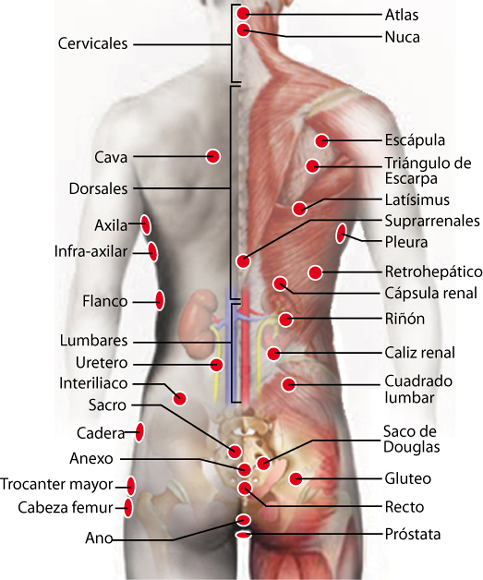

197. Hombro
197. Hombro
Cardias:
Cryptocides primordialis.
hombro:
Hombro congelado
198. Pleura
198. Pleura:
Pleura:
Pleuritis viral
Pleura (hl):
Aeruginosa
Peritoneo:
Reservorio, Moisés
Hígado:
Hepatitis B
Apéndice:
Estafilococo aureus
Pulmón izquierdo:
Tabaquismo
Escápula derecha : Tabaquismo
199. Flanco
199. Flanco
Flanco
Yersinia Intestinalis
200. Plexo Braquial
200. Plexo Branquial
Plexo braquial:
Estreptococo A
Codo ipsilateral:
Mycobactrium Leprae
201. Nudo Braquial
201. Nudo Braquial
Nudo Braquial:
Desbloqueo energético
202. supraescapular
202. Supraescapular
Supraescapular:
htlv
203.Esp. de omoplato
203. Esp. de omoplato
Espina de omoplato:
Mycoplasma pneumoniae
Espina de omoplato:
Lupus
204. Dorsales (1-12)
204. Dorsales
Dorsales (1-12):
Radiculopatias
205. Dorso
205. Dorso
Lumbar:
Meningococo
206. Dorsal 1
206. Dorsal 1
Dorsal 1:
Proteus Vulgaris
207. Dorsal 2
207. Dorsal 2
Dorsal 2
legionela
Dorsal 2:
Baja globulos blancos
Dorsal 2:
Tos, abscesos pulmonares
208. Dorsal 3
208. Dorsal 3
Dorsal 3:
Tuberculosis
Dorsal 7:
Baja globulos blancos
209. Dorsal 4
209. Dorsal 4
Dorsal 4:
Aftosa
Dorsal 4:
Baja globulos blancos
1a Lumbar:
Neiseria
1a Lumbar:
Espina Bifida
1a Lumbar:
Meningococo
3a Lumbar:
Neiseria
3a Lumbar:
Espina Bifida
3a Lumbar:
Meningococo
210. Dorsal 5
210. Dorsal 5
2da Lumbar:
Neiseria
2da Lumbar:
Espina Bifida
2da Lumbar:
Meningococo
5ta Dorsal:
Escherichia Colli
211. Dorsal 6
211. Dorsal 6
Dorsal 6:
Coccidio I.
Sacro:
Alcalinidad Fecal
212. Dorsal 7
212. Dorsal 7
Dorsal 7:
Vibrio Parahemoliticus
Dorsal 7:
Cólera
Dorsal 7:
Leucemia
Dorsal 7:
Acidez y oxidación
213. Dorsal 8
213. Dorsal 8
Dorsal 8:
Lepra
214. Dorsal 9
214. Dorsal 9
228. Dorsal 9:
Influenza Virus
215. Dorsal 10
215. Dorsal 10
Dorsal 10:
Influenza haemophilus
216. Dorsal 11
216. Dorsal 11
Dorsal 11:
Estreptococo Beta hemolítico
217. Dorsal 12
217. Dorsal 12
Dorsal 12:
Estreptococo pneumoniae
Lumbar 1:
Norwalk
218. Plexo Lumbar
218. Plexo Lumbar
Plexo Lumbar:
Enterococus Fecalis
219. Plexo Lumbosacro
219. Plexo Lumbosacro
Plexo Lumbar-sacral:
Enterococus Fecalis
Plexo Lumbar-sacral:
Pseudomona Aureoginosa
220. Lumbar 1
220. Lumbar 1
Lumbar 1:
Mycoplasma Hominis
Dorsal 5:
Meningococo
221. Lumbar 2
221. Lumbar 2
Lumbar 2:
Clostridium Dificile
Lumbar 2:
Diabetes
Lumbar 2:
Problemas digestivos
222. Lumbar 3
222. Lumbar 3
Lumbar 3:
Estreptococo Betahemolítico
Dorsal 3:
Adenovirus
223. Lumbar 4
223. Lumbar 4
Lumbar 4:
Gonorrea
Lumbar 4:
Calcificación lumbar
sacro:
Proteus mirabilis
224. Lumbar 5
224. Lumbar 5
Lumbar 5:
Estaphilococo Aureus
Lumbar 5:
Echerichia colli
225. Parvertebral
225. Parvertebral
Parvertebral:
Radiculopatias
226. Sacro
226. Sacro
Cervical:
Disfunción sistema nervioso
Vejiga:
Estreptocococo G
Sacro:
Proteus Mirabilis
Cóccix:
Hemorroides y várices
Útero:
Endometriosis
Plexo cervical:
Acido úrrico, gota
Ciático:
Calambres en las piernas
227. Art Sacro-iliaco
227. Art Sacro-iliaco
Art Sacro-iliaco:
Norwalk virus
228. Cauda equina
228. Cauda equina
Cauda equina:
Herpes 9
229. cóccix
229. cóccix
cóccix:
Rotavirus
cóccix:
Transtornos pelvicos
cóccix:
Transtornos Digestivos
cóccix:
Transtornos Renales
cóccix:
Transtornos Sexuales
Ciático:
Calambres en las piernas
cóccix:
Ácideo Úrico, gota
230. Cava
230. Cava
Cava:
Trycophito
cava:
Ansiedad
231. Escápula
231. Escápula
Escápula:
Lepra
Ojo:
Cataratas
Útero:
Mioma
232. Pulmón
232. Pulmón
Pulmón:
Culpa
Coronarias
Estreptococo A
Bulbo R:
Kado, Tristeza
Corazón:
Kado, Tristeza
233. Latísimus
233. Latísimus
Latísimus:
Yersinia pneumoniae
234. Lob. Post. Hígado
234. Lob. Post. Hígado
Riñon:
Intoxicación por metales
235.Retrohepático
235.Retrohepático
Retrohepático:
Toxacara Acaro
236. Suprarrenal
236. Suprarrenal
Hígado:
Soberbia
Pulmón:
Pseudomona Aeroginosa
Suprarrenal:
Disfunción suprarrenal
Recto:
Leptospira
Bulbo raquideo :
Adenovirus
Todo el frente:
Asma alergica
237. Cápsula Renal
237. Cápsula Renal
Cápsula Renal:
Proteus Mirabillis
Vejiga:
Toxinas en el Riñón
238. Riñón
238. Riñón
Riñón:
Tetanos
Cápsula Renal (hl):
Alex
Ojo (I):
Fobias
Tiroides:
Miedo a sufrir accidentes
Pómulo contralateral. :
Paludismo, Plasmodium vivex
Sacro contralateral :
Olazo
Riñón Inf.:
Inmunocompetencia
Duodeno:
Diabetes Mellitus
Temporal (parietal, oído) contralateral :
Goiz
Uretero (hl):
Machín o Herpes (4)
Conducto de Páncreas:
Espiroqueta
Deltoides :
Leismania
Conducto de vesícula :
Espiroqueta
Capsula Renal (hl):
VIH 1 sida
Ojo (i):
Asma Verdadero
Uretero:
Cólico
Hígado:
Intoxicación por toxinas ó farmacos.
Riñon (-):
Bajar fiebre
239.Caliz renal
239.Caliz renal
Uretero:
Herpes V, virus
240. Perirrenal
240. Perirrenal
Perirrenal:
Microbacterium Bovis
241. Zona suprarrenal
241. Zona suprarrenal
Riñon contralateral:
Reservorio universal
242. Cuadrado lumbar
242. Cuadrado lumbar
Cuadrado lumbar:
Tripanosoma Palidum
243. Interiliaco
243. Interiliaco
Riñón :
Parasitos
244. Gluteo (Mayor)
244. Gluteo (Mayor)
Gluteo (Mayor):
Parásitos intestinales
Píloro:
Vellonella (Veillonella)
vena Femoral:
Babesia
Aquiles:
Reservorio Universal
245. Gluteo sup.
245. Gluteo sup.
Nalga (d):
Staquibotrix
Nalga (i):
Virus indefinido
246. Anexo
246. Anexo
Ano:
Paramoxivirus
247. Recto
247. Recto
Timo:
VIH 1 Sida
Ano:
Diarrea
Recto:
Pseudoma Aureoginosa
248. Ano
248. Ano
Ano:
Papiloma
Lengua:
Chlostridium dificile
Lengua:
Diabetes
Lengua:
Problemas digetivos
Próstata:
Papiloma
Píloro:
Hongo (levadura)
Testiculo (i):
Hemorroides
249. Cóccix
249. Cóccix
Cóccix:
Rotavirus
Cóccix:
Pélvico
250. Próstata
250. Próstata
Próstata:
Disfunción Prostática
Recto:
Papiloma virus
251. Cresta Iliaca
251. Cresta Iliaca
Cresta Iliaca:
Trypanosoma Gambie
Rama isquiática:
Estraptococo C
Cresta iliaca ante superior:
Obesidad
252. Saco de Douglas
252. Saco de Douglas
Vena femoral (d):
Norwalk virus
253. Piso Pélvico
253. Piso Pélvico
Piso Pélvico:
Reservorio universal
254. Cadera (d)
254. Cadera (d)
Cadera (d):
Chlamydia Pneumonae
255. Cabeza-cuello femur
255. Cabeza-cuello femur
Cabeza-cuello femur:
Reservorio de hongos
256. Trocanter mayor
256. Trocanter mayor
Trocánter Mayor:
Micosis Rhinosporidium
Trocánter Mayor:
Salmonela Tiffo
Tensor fascia latta
Blastomices dermatiditis
Riñon:
Basilo paratyphi
257. Isquión
257. Isquión
Isquión:
Onchocerca
Continuar
Continuar
Puntos de piernas
Rastreo Dorso
Cabeza
Cuello
Brazos
Torso
Dorso
Piernas
Otros
Puntos, lista